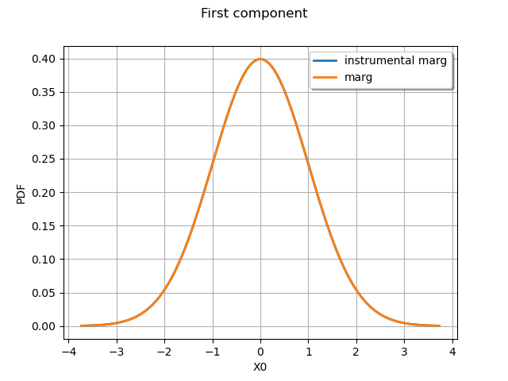
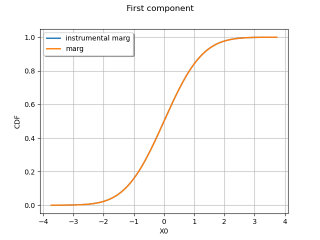
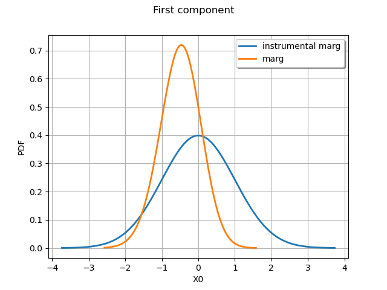

Note
Go to the end to download the full example code.
Create and draw multivariate distributions¶
In this example we create and draw multidimensional distributions.
import openturns as ot
import openturns.viewer as otv
from matplotlib import pylab as plt
ot.Log.Show(ot.Log.NONE)
Create a multivariate model with a JointDistribution¶
In this paragraph we use JointDistribution class to
build a multivariate distribution of dimension ![\inputDim]() , from:
, from:
- scalar distributions whose cumulative distribution functions are
denoted by
![(F_1, \dots, F_\inputDim)]() , called the instrumental marginals,
, called the instrumental marginals, and a core
![K]() which is a multivariate distribution of dimension whose range is
included in
which is a multivariate distribution of dimension whose range is
included in ![[0,1]^\inputDim]() .
.
First case: the core is a copula¶
In this case, we use a core which is a copula. Thus, the instrumental marginals are the marginals of the multivariate distribution.
We first create the marginals of the distribution:
We use a ClaytonCopula as dependence structure.
marginals = [ot.Normal(), ot.Gumbel()]
theta = 2.0
cop = ot.ClaytonCopula(theta)
distribution = ot.JointDistribution(marginals, cop)
We can check here that the instrumental marginals really are the marginal distributions.
In the following graphs, we draw the instrumental marginals and the real marginals, obtained with
the method getMarginal().
First, we draw the probability density functions of each component.
graph_PDF_0 = marginals[0].drawPDF()
graph_PDF_0.add(distribution.getMarginal(0).drawPDF())
graph_PDF_0.setLegends(['instrumental marg', 'marg'])
graph_PDF_0.setTitle("First component")
view = otv.View(graph_PDF_0)
graph_PDF_1 = marginals[1].drawPDF()
graph_PDF_1.add(distribution.getMarginal(1).drawPDF())
graph_PDF_1.setLegends(['instrumental marg', 'marg'])
graph_PDF_1.setTitle("Second component")
view = otv.View(graph_PDF_1)
- 
Then, we draw the cumulative distribution functions.
graph_CDF_0 = marginals[0].drawCDF()
graph_CDF_0.add(distribution.getMarginal(0).drawCDF())
graph_CDF_0.setLegends(['instrumental marg', 'marg'])
graph_CDF_0.setTitle("First component")
view = otv.View(graph_CDF_0)
graph_CDF_1 = marginals[1].drawCDF()
graph_CDF_1.add(distribution.getMarginal(1).drawCDF())
graph_CDF_1.setLegends(['instrumental marg', 'marg'])
graph_CDF_1.setTitle("Second component")
view = otv.View(graph_CDF_1)
- 
At last, we check that the copula of the multivariate distribution is the specified core which was a copula.
cop_dist = distribution.getCopula()
graph_cop = cop_dist.drawPDF()
# Get the Contour Drawable's actual implementation from the Graph
# produced by drawPDF in order to access all its methods
contour_cop = cop.drawPDF().getDrawable(1).getImplementation()
contour_cop.setLineStyle('dashed')
# Remove the colorbar
contour_cop.setColorBarPosition("")
graph_cop.add(contour_cop)
# Add the contour without a colorbargraph_cop.add(cop.drawPDF())
graph_cop.setTitle('Distribution copula and core')
view = otv.View(graph_cop)
We can draw the PDF of the bivariate distribution:
graph = distribution.drawPDF()
view = otv.View(graph)
We also draw the CDF :
graph = distribution.drawCDF()
view = otv.View(graph)
Second case: the core is not a copula¶
In this case, we use a core which is not a copula. Thus, the instrumental marginals are not the marginals of the multivariate distribution.
We first create the instrumental marginals of the distribution:
We use a Dirichlet as the core.
inst_marginals = [ot.Normal(), ot.Gumbel()]
core_dir = ot.Dirichlet([2.0, 1.5, 2.5])
distribution = ot.JointDistribution(inst_marginals, core_dir)
We can check here that the instrumental marginals are not the marginal distributions.
In the following graphs, we draw the instrumental marginals and the real marginals, obtained with
the method getMarginal().
First, we draw the probability density functions of each component.
graph_PDF_0 = inst_marginals[0].drawPDF()
graph_PDF_0.add(distribution.getMarginal(0).drawPDF())
graph_PDF_0.setLegends(['instrumental marg', 'marg'])
graph_PDF_0.setTitle("First component")
view = otv.View(graph_PDF_0)
graph_PDF_1 = inst_marginals[1].drawPDF()
graph_PDF_1.add(distribution.getMarginal(1).drawPDF())
graph_PDF_1.setLegends(['instrumental marg', 'marg'])
graph_PDF_1.setTitle("Second component")
view = otv.View(graph_PDF_1)
- 
Then, we draw the cumulative distribution functions.
graph_CDF_0 = inst_marginals[0].drawCDF()
graph_CDF_0.add(distribution.getMarginal(0).drawCDF())
graph_CDF_0.setLegends(['instrumental marg', 'marg'])
graph_CDF_0.setTitle("First component")
view = otv.View(graph_CDF_0)
graph_CDF_1 = inst_marginals[1].drawCDF()
graph_CDF_1.add(distribution.getMarginal(1).drawCDF())
graph_CDF_1.setLegends(['instrumental marg', 'marg'])
graph_CDF_1.setTitle("Second component")
view = otv.View(graph_CDF_1)
At last, we check that the copula of the multivariate distribution is not the specified core.
cop_dist = distribution.getCopula()
graph_cop = cop_dist.drawPDF()
cop_dist_draw = graph_cop.getDrawable(1)
levels = cop_dist_draw.getLevels()
graph_core = core_dir.drawPDF()
core_draw = graph_core.getDrawable(0).getImplementation()
core_draw.setColorBarPosition("")
core_draw.setLevels(levels)
core_draw.setLineStyle('dashed')
graph_cop.add(core_draw)
graph_cop.setTitle('Distribution copula and core')
view = otv.View(graph_cop)
We can draw the PDF of the bivariate distribution.
graph = distribution.drawPDF()
view = otv.View(graph)
We also draw the CDF.
graph = distribution.drawCDF()
view = otv.View(graph)
Use some native multivariate models¶
Some models in the library are natively multivariate. We present examples of three of them:
the
Normaldistribution,the
Studentdistribution,the
UserDefineddistribution.
The Normal distribution¶
The Normal distribution is natively multivariate.
Here we define a bivariate standard unit Normal distribution and display
its PDF.
dim = 2
distribution = ot.Normal(dim)
graph = distribution.drawPDF()
graph.setTitle("Bivariate standard unit Normal PDF")
view = otv.View(graph)
The Student distribution¶
The Student distribution is natively multivariate. Here we define a Student distribution in dimension 2 and display its PDF :
dim = 2
R = ot.CorrelationMatrix(dim)
R[1, 0] = -0.2
distribution = ot.Student(4, [0.0, 1.0], [1.0, 1.0], R)
graph = distribution.drawPDF()
graph.setTitle("Bivariate Student PDF")
view = otv.View(graph)
The UserDefined distribution¶
We can also define our own distribution with the UserDefined distribution.
For instance consider the square ![[-1,1] \times [-1, 1]]() with some
random points uniformly drawn. For each point the weight chosen is the square
of the distance to the origin. The
with some
random points uniformly drawn. For each point the weight chosen is the square
of the distance to the origin. The UserDefined class normalizes the weights.
We first generate random points in the square.
distUniform2 = ot.JointDistribution([ot.Uniform(-1.0, 1.0)] * 2)
N = 100
sample = distUniform2.getSample(N)
We then build the points and weights for the UserDefined distribution.
points = []
weights = []
for i in range(N):
points.append(sample[i, :])
weights.append((sample[i, 0] ** 2 + sample[i, 1] ** 2) ** 2)
We build the distribution :
distribution = ot.UserDefined(points, weights)
graph = distribution.drawPDF()
graph.setTitle("User defined PDF")
We can generate and display a sample from this distribution.
omega = distribution.getSample(100)
cloud = ot.Cloud(omega, "black", "fdiamond", "Sample from UserDefined distribution")
graph.add(cloud)
view = otv.View(graph)
As expected most values are near the edge of the square where the PDF is the higher.
Display all figures
plt.show()
Total running time of the script: (0 minutes 2.987 seconds)